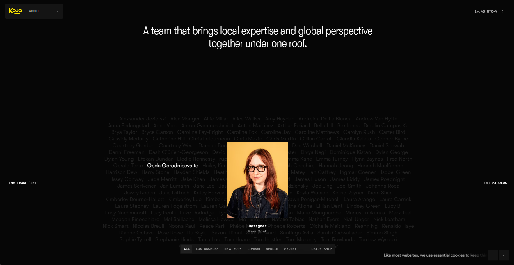

HTML
HTML이란?
HyperText Markup Language의 약자로, 브라우저가 이해할 수 있는 웹 페이지의 뼈대(구조)를 만드는 가장 기본적인 언어입니다. 텍스트, 이미지, 링크 등을 화면에 정의합니다.
HTML의 기본 구조
모든 HTML 문서는 아래와 같은 필수 뼈대를 가집니다.
- <!DOCTYPE html>: 이 문서가 HTML5 표준으로 작성되었음을 선언합니다.
- <html>: 웹 문서의 시작과 끝을 감싸는 뿌리 태그입니다.
- <head>: 메타 데이터, 탭 제목, CSS 링크 등 화면에 보이지 않는 설정값을 담습니다.
- <body>: 브라우저 화면에 실제로 보여지는 모든 콘텐츠가 들어가는 공간입니다.
주요 코드 (Tags)
웹 표준과 접근성을 지키기 위해 역할에 맞는 태그(시맨틱 마크업)를 사용해야 합니다.
- <header>, <main>, <footer>: 문서의 구역을 의미 있게 나누는 시맨틱 태그
- <h1> ~ <h6>: 콘텐츠의 제목과 텍스트의 위계를 나타내는 태그
- <a href="...">: 다른 페이지나 위치로 연결하는 하이퍼링크 태그
- <img src="..." alt="...">: 이미지를 삽입하며, 대체 텍스트(alt)를 필수로 포함
<div>로 모든 것을 감싸지 말고, 역할에 맞는 태그를 먼저 찾는 습관을 들이세요.
CSS
CSS란?
Cascading Style Sheets의 약자로, HTML로 만든 웹 페이지의 뼈대에 색상, 크기, 폰트 등의 디자인을 입혀 시각적으로 아름답게 꾸며주는 스타일링 언어입니다.
CSS의 구조
CSS는 기본적으로 '누구에게(선택자)', '무엇을(속성)', '어떻게(값)' 할 것인지 지정하는 문법 구조를 가집니다.
- 선택자 (Selector): 스타일을 적용할 HTML 태그 (예:
h1,.box) - 속성 (Property): 변경할 스타일의 종류 (예:
color,font-size) - 값 (Value): 속성에 적용할 구체적인 수치나 상태 (예:
blue,16px)
CSS의 주요 코드
웹사이트의 레이아웃과 여백을 잡는 데 가장 자주 쓰이는 핵심 속성들입니다.
- display (flex / grid): 요소들을 가로/세로로 유연하게 배치하는 현대적인 레이아웃 시스템
- margin / padding: 박스의 바깥쪽 여백(margin)과 안쪽 여백(padding)
- width / height: 요소의 너비와 높이
- background-color: 배경 색상을 지정
margin은 요소 바깥의 공간, padding은 요소 안쪽의 공간입니다. 배경색은 padding 영역까지 채워지지만 margin 영역은 채워지지 않습니다.
CSS 선택자
특정 요소만 콕 집어서 디자인을 적용하기 위해 다양한 선택자를 활용합니다.
- 태그 선택자:
p { ... }(모든 p 태그에 적용) - 클래스(Class) 선택자:
.card { ... }(특정 이름을 가진 그룹에 적용, 앞에 점(.) 사용) - 아이디(ID) 선택자:
#header { ... }(페이지 내 유일한 요소에 적용, 앞에 샵(#) 사용) - 가상 클래스:
:hover { ... }(마우스를 올렸을 때 등의 상태를 지정)
class 선택자를 주로 사용합니다. ID 선택자는 우선순위가 매우 높아 나중에 스타일 덮어쓰기가 어려워지므로, 스타일 용도로는 가급적 피하세요.
QUIZ
Frontend Self-Test
퀴즈의 정답은 '정답 보기' 버튼을 클릭해 보세요!
- Q1. 웹 브라우저 화면에서 사용자에게 실제로 보여지는 내용을 담아내는 HTML 태그는 무엇일까요? A.body 태그
- Q2. 박스 모델의 크기 계산 방식을 테두리(border) 기준으로 고정하는 속성은? A. box-sizing: border-box;
- Q3. Flex 레이아웃에서 자식 요소를 가로축 기준 정중앙 정렬하는 속성은? A. justify-content: center;
- Q4. 이미지 로딩 실패 시 대비하여 대체 텍스트를 제공하는 필수 속성의 이름은? A. alt 속성
- Q5. 마우스를 올렸을 때(호버 상태)의 스타일을 지정하는 가상 클래스는? A. :hover
- Q6. HTML에서 문서의 언어 설정 및 페이지 전체를 감싸는 최상위 태그는 무엇인가요? A. <html lang="ko"> 태그
- Q7. CSS에서 요소의 크기 계산 기준을 테두리(border) 포함으로 고정하는 속성 값은? A. box-sizing: border-box
- Q8. 시맨틱 태그를 사용하는 가장 중요한 이유 두 가지는 무엇인가요? A. 웹 접근성(스크린리더 지원)과 검색엔진 최적화(SEO)
Web Archive
Reference 01: Koto

글로벌 크리에이티브 스튜디오글로벌 브랜드의 리브랜딩으로 유명한 크리에이티브 스튜디오입니다.
나의 의견 및 분석
감각적인 영상과 다양한 브랜드의 시각적 브랜딩 설계를 엿볼 수 있습니다. 특히 사이트 내 곳곳에 숨겨진 다양한 인터랙션은 사용자에게 웹을 탐험하는 재미를 줍니다.
Reference 02: Awwwards
 웹 디자인 어워드 플랫폼
웹 디자인 어워드 플랫폼
전 세계 최고 수준의 웹 디자인 작품을 큐레이션하는 어워드 사이트입니다. HTML, CSS, 인터랙션 디자인의 현재 트렌드를 한눈에 파악할 수 있습니다.
나의 의견 및 분석
수상작들을 보면 단순히 "예쁜 사이트"가 아니라 사용자 경험(UX)과 시각적 완성도가 함께 설계된 작품임을 알 수 있습니다. 레이아웃과 애니메이션 구현 방식을 학습하기 좋은 레퍼런스입니다.